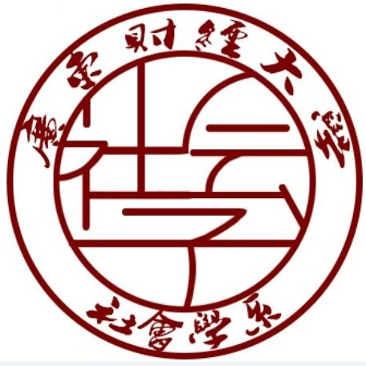

开讲：多元性别文化--Ta们各自的精彩
以下文章来源于广财大社会学系 ，作者洪晓敏

广财大社会学系
.
广东财经大学人文与传播学院应用社会学系官方微信平台，致力于加强本系师生交流互动，促进全系学生团结友爱，发布教学科研信息与本系最新动态！
|什么是LGBT呢？
LGBT是Lesbians、Gays、Bisexuals与Transgender的英文首字母缩略字。20世纪90年代，由于"同性恋社群"一词无法完整体现相关群体，"LGBT"一词便应运而生、并逐渐普及。在现代用语中，"LGBT"一词十分重视性倾向与性别认同文化多样性，除了狭义的指同性恋、双性恋或跨性别族群，也可广泛代表所有非异性恋者。另外，也有人在词语后方加上字母"Q"，代表酷儿(Queer)或对其性别认同感到疑惑的人(Questioning)，即变为"LGBTQ"。LGBT现今已获得了许多英语系国家中多数的LGBT族群和LGBT媒体的认同及采用，成为一种非常主流的用法。

总的而言，我们对LGBT群体的了解可能会比较少，甚至会对这一群体有着或多或少的疑惑。而本次讲座将带你进入一个多元性别文化的世界，增加你对LGBT的认识，为你进行相关问题的答疑解惑。是不是心动了呢?
|街坊：多元性别文化你怎么看

讲座主题：本次讲座将从多元的性别文化的视角来介绍各种性别现象，探讨这些现象之间的差异以及这些现象对我们生活的影响。


4·25约你一起探讨新世界！